Introduction
mindmap
cours((Structure du cours))
Évaluation
Format
Sujets clés
Principes fondamentaux
Attentes des étudiants
About this course
Welcome! I'm Julien Dauliac, a Site Reliability Engineer (SRE), it's like DevOps. I have a background in software architecture and enjoy development in general. My favorite technologies include Nix , Kubernetes and Rust, and I take a strong stance in advocating for efficient and modern software practices.
You can find my GitHub here: https://github.com/Dauliac
My courses are structured but adaptable. I frequently adjust the content based on my mood, your questions, and the interests of the group. If a topic excites you, feel free to ask—I am happy to form smaller breakout groups to dive deeper.
I am opinionated and proselytizing about good software practices.
All course materials are available on GitHub: https://github.com/Dauliac/Cours
My CV is also available here: https://github.com/Dauliac/resume
Evaluation & grading
You will be graded on the project in collaboration with Alan, but based on different criteria:
- Build System
- CI/CD
- Supply Chain Security
The further you progress, the better your grade.
Course format
- Formal Lessons: Structured content that will be adapted as needed.
- Interactive Sessions: Q&A and real-world case studies.
- Breakout Groups: If you have a particular interest, I can take smaller groups aside to dive deeper into specific topics.
- Hands-on Practice: Practical work will be emphasized throughout the course.
Core topics
- Software Delivery Life Cycle (SDLC): Key methodologies and industry best practices.
- Operating Systems: Understanding how systems work under the hood.
- Licensing Models: Exploring software licenses and their implications.
- Technical Documentation: Writing clear and effective documentation.
Key principles
- Automation: Leveraging CI/CD and modern infrastructure tools.
- Security: Ensuring a robust software supply chain.
- Efficiency: Writing scalable and maintainable code.
- Open Source: Advocating and contributing to open-source projects.
Expectations
- Engagement: Participation in discussions and hands-on sessions.
- Curiosity: Asking questions and exploring beyond the course content.
header: 'Software Delivery Life Cycle Course' footer: 'Julien Dauliac -- ynov.casualty925@passfwd.com'
Software Delivery Life Cycle
Module Objective
- Cover software delivery life cycle methods
- Understand the importance of CI/CD
- Measure the performance of CI/CD
- Learn basic CI/CD architectures
- Know how to code a basic CI/CD
Introduction to CI/CD
Definitions:
Software Delivery Life Cycle
SDLC (Software Development Life Cycle) is a process that enables the production of high-quality software at the lowest cost within the shortest time frame.
In French: Cycle de développement logiciel
Framework:
- Agile
- DevOps
CI
Continuous Integration (CI) involves regularly and automatically integrating developers' source code into a shared repository. Each code modification triggers automated tests to detect errors as early as possible.
- Test automation
- Supply chain automation
- Code review automation
Supply Chain
Code used to build software
CD
- Automation of delivery
- Automation of deployment
In Continuous Delivery, versions are ready to be deployed but aren't deployed automatically.
A picture is worth a thousand words:

QQOQCCP
| What | CI/CD is an approach for automating software development processes. |
|---|---|
| Who | It involves developers, testers, and automated tools. |
| Where | It can be used in any development environment. |
| When | It's applied throughout the development cycle. |
| How | It automates compilation, testing, deployment, and feedback management. |
| Why | It aims to improve quality, accelerate development, reduce errors, foster collaboration, and enable frequent deployments. |
5 Whys of CI/CD
- Project management method that finds radical solutions to a problem.
- CI/CD is a radical solution.
Stability
Problem: Deployments frequently fail in production.
- Why do deployments fail in production?
Security
Problem: Too many security vulnerabilities in production.
Also
- Automate labor:
#DEVOPSüåª - Achieve economies of scale ü™ú
- Reduce stress üßò‚Äç‚ôÇÔ∏è
Entities
- Culture: DevOps
- Agile management: Release train
- Code: Software Development Life Cycle
- Platform: Software forge (GitLab or others)
- Craftsmanship:
Humans + Tools = ü§ü
DEVOPS üíì CICD
- A deeply DevOps practice
- Automate labor: #DEVOPS üåª
- Collective management of non-functional aspects
- Test everything that can be tested
Non-functional aspects
- A specification: RFC ISO 25 010
- ISQTB

Keys performance indicators (KPI)
It doesn’t work, it’s too slow, it’s broken.

- Managers don’t always know what's best for non-functional aspects.
- An alternative to non-factual directives.
- ⚠️ KPI can become a tool for team pressure: Data isn't facts, and facts aren't goals.
My Favorite KPI üîë
- Automation factor
- Technical debt
- Code coverage
- CVE rate
- Automated test failure rate
DORA Metrics
- Deployment frequency
- Change execution delay
- Mean time to recovery
- Change failure rate

CI/CD Architecture üèóÔ∏è
CI/CD Geography üó∫Ô∏è
- Local to your development machine (on Linux or other OS)
- Software forge: GitLab and others…
- External tools: SonarQube, Argo-CD,
CI/CD Timeline üïê
Software Development Life Cycle (SDLC)

CI/CD 10000ft flight height - The Standard Documentation
4 Steps

- Linting: The linting phase ensures that the codebase is in good shape. This may include checking formatting, style, and auto generated code.
- Building:
Builds should adhere to these properties:
- idempotence
- efficiency
- speed
- Deployment:
-
Tool Method Description ansible⬇️ Code and operations are sent to production from a client machine using SSH. fluxCD⬆️ The fluxCDserver listens to your software forge to pull updates.
-
Monorepo vs Polyrepo
- The organization of repositories is a crucial aspect of CI/CD.
- Splitting or not splitting projects will determine the ease of adopting tools and practices…
Polyrepo
- Advantages:
- Isolation and independence between projects.
- Easier management of individual repositories.
- Improved performance and scalability, but more complex maintenance.
- Disadvantages:
- Harder project coordination.
- Risk of inconsistency and divergence.
- Tedious maintenance with multiple repositories.
Monorepo
- Advantages:
- Easier collaboration and code sharing.
- Centralized version and security management.
- Possibility of frequent merge conflicts and complex dependencies.
- Disadvantages:
- Frequent merge conflicts.
- Errors in one project can impact the entire system.
- More complex management as it scales.
How to split?
- Team topology
- Projects should mirror teams:
- If CI/CD is a shared responsibility ➡️ Monorepo
- If each team has its own DevOps (developers or SRE, OPS) ➡️ Polyrepo
- Projects should mirror teams:
And for CI/CD
- Monorepo for CI/CD: 
header: 'Systems Course' footer: 'Julien Dauliac -- ynov.casualty925@passfwd.com'
Systems Course
Introduction
Objectives
- Understand the system boot process, from BIOS initialization to kernel execution.
- Gain foundational knowledge of operating system architectures.
- Explore different forms of isolation, including virtual machines, containers, and lambdas, and understand their advantages and disadvantages.
What's an OS?
What does an OS offer?
- Do I need one?
- Not necessarily, but if it's a personal computer (PC), it’s better.
- Why?
- To abstract the hardware.
A Simple System to Start
-
BIOS
-
Kernel booted by BIOS
-
Creation of process 0 by the kernel
-
IDLE = process that does nothing:
while(true) {}

BIOS
- Fun fact: üçé The Mac startup sound comes from an illegal sample from The Beatles‚Äô Sgt. Pepper‚Äôs Lonely Hearts Club Band album.
Hard BIOS


Corporate BIOS

Casual BIOS


What's a BIOS?
- The first instruction executed by the processor
- Detects and initializes hardware:
- Processors, memory, I/O controllers, peripherals, etc.
- Hardware configuration
- Boots the operating system
- Old term
A Language Misuse
- Extensible Firmware Interface → INTEL
- Unified Extensible Firmware Interface → AMD, American Megatrends, Apple, ARM, Dell, HP, Intel, IBM, Insyde Software, Microsoft, and Phoenix Technologies
UEFI Architecture
- SEC (Security) for executing authentication and integrity control processes (SecureBoot, password, USB token)
- PEI (Before EFI Initialization) for motherboard and chipset initialization. Switches processor to protected mode.
- DXE (Driver Execution Environment) for driver registration. Manages EFI application requests like a bootloader.
- BDS (Boot Device Select) for a boot manager like GRUB
- TSL (Transient System Load) for the transition phase where the OS is loaded. EFI services terminate via ExitBootServices(), handing over control to the OS.
- RT (RunTime) once the OS takes over. Interaction with firmware is limited to EFI variables stored in NVRAM.

Security
The BIOS isn't our domain, but we must protect the foundations.
- Set a UEFI password
- Enable Secure Boot:
- Signs the bootloader, kernel, and verifies signatures at startup.
An Open Source BIOS üéä
Open Firmware
Firmware Switching (Proprietary Firmware or System76 Open Firmware)
Kernel
- Static code
- Loaded at startup
- Isolates programs from the machine
- Interfaces with user space via
SYSCALL
Kernel Components Summary
| Component | Description | Study Time |
|---|---|---|
| Scheduler | Determines which processes run and for how long using scheduling policies. | ✅ |
| Process Management | Manages processes and threads, deciding CPU allocation and priorities. | ✅ |
| System Calls | Handles requests to the operating system. | ✅ |
| I/O Management | Facilitates interactions between hardware and software. | ❌ |
| Drivers | Manages external devices. | ❌ |
| Inter-Process Communication | Provides communication mechanisms like signals, pipes, and semaphores. | ❌ |
| RAM Sharing Between Processes | Uses virtual memory and paging for isolation and sharing. | ❌ |
Scheduler
What's it ?
How do we run multiple processes?
Scheduler and Timer

- Scheduler: Algorithm that uses a timer circuit to share CPU access.
- The kernel interrupts processes.
- The time it takes to give all processes a chance to execute is called an epoch.
- Uses system interruptions to function.
Scheduling Algorithms
- Round Robin (each takes turns)
- Priority-based
- Multi-level feedback queues
As in life, inequalities can be created.
# renice - alter priority of running processes
renice
Example:
On critical systems like rockets üöÄ, each process can have a set priority. This is easier when you know all processes in advance.
System Calls (Syscalls)

-
Communication protocol with the kernel
-
List of numerical identifiers
-
Found in kernel source code:
SYSCALL_DEFINE3(ioctl, unsigned int, fd, unsigned int, cmd, unsigned long, arg) { /* do freaky ioctl stuff */ }
| System Call | rax | rdi | rsi | rdx | r10 | r8 | r9 |
|---|---|---|---|---|---|---|---|
| sys_chroot | 161 | const char* filename | |||||
| sys_chmod | 90 | const char* filename | uid_t user | gid_t group | |||
| sys_mkdir | 83 | const char* pathname | int mode |
header: 'License Course' footer: 'Julien Dauliac -- ynov.casualty925@passfwd.com'
License Course
- Intangible Assets
- Theft
- Software Can't be stolen
- Internet
- Licenses and Business Models
- French Law
- Degradation
- Cyber War
- Issues with AI Models
- Making Money
- Bibliography
Intangible Assets
- Intangibles, which can't be touched.
- No competition on products.
Theft
Theft is the fraudulent appropriation of another person's property. Penal Code Article 311-1
Wiktionary
Software Can't be stolen
- Software is an intangible asset.
Internet
- Allows a marginal technical cost:
e.g:
- Proliferation of e-commerce, e-learning, e-services.
Licenses and Business Models
Rights Holder
The author of an intellectual work enjoys, by the mere act of its creation, an exclusive incorporeal property right enforceable against all. Intellectual Property Code (article L111-1)
- The rights holder chooses the license.
- In a company, rights are transferred to the company (except for interns)
Proprietary Licenses
- Classic, closed, proprietary.
Shareware Licenses
- WinRAR
- Viral marketing
- No longer exists
- Difficulty at the time in reaching an audience
1 million use it and 100 pay == 1000 use it and 100 pay
Freeware
- Indirect monetization:
- Often used for services: SAAS
- If the service is free, you are the product.
Examples:
- Google Drive
- Discord
- Discord doesn't sell user data.
- Discord dilutes its shares.
Freemium
- Free at first and then encourage payment.
Examples:
- Pay to win
- Tinder
Open Source
- Free
- Can benefit from community support
- Internet allows marginal economic sharing cost
Copyleft
- Contagious
- A way to make software (or other works) free
Summary

Economically
- Highly effective:
- Network effect:
- Viral
- Popular
- Devastates competition
- Chromium
- KDE
- Network effect:
French Law
Asymmetry
- Primacy of French law
- Patents are illegal in France
- Software patents are legal in Europe
EPO
- A hybrid organization
- No accountability
- No democratic control
- No legal oversight
- Changing the EU constitution would be required to reform the EPO.
- Anti-free software
- 3/4 of software patents granted by the EPO are held by non-European countries.
- Dicey
Patent Trolls
- Companies that exist solely to file lawsuits.
Useless Patents
- Useless patents:
- Double click: Microsoft, 2007
- One-click purchase: Amazon, 1999
- Hyperlink patent: IBM, 1998
- Window patent: Xerox, 1984
Primacy of US Law
- Entering the patent system means submitting to US law.
Hindrance to Innovation
- Anti-innovation
- Allows international firms to appropriate technologies
- Puts small and medium enterprises at a disadvantage against giants
- Innovation doesn't come from large corporations.
- Large corporations buy, fund, integrate
Degradation
Hashicorp Case
All Hashicorp software has moved from free licenses to BUSL.
Monetization of Social and Symbolic Capital
Bourdieu:
- Economic capital
- Cultural capital
- Symbolic capital
- Social capital
Deterioration of public goods?
Cyber War
- A war has been won:
Free software dominates in all areas:
- Profitability
- Individual rights and freedoms
- Performance
But
- A new war is ongoing...
- A battle over cloud providers and, more generally, platforms.
- SAAS, a new tool for depriving freedoms.
Copyright law shows its limits on databases due to artificial intelligence:
- Freeing models
- Risks of privatization
- Risk of theft
Issues with AI Models
ChatGPT === Wikipedia + Reddit + Twitter + Marmiton + ...
The problem with recommendation algorithms:
- Cambridge Analytica
- QAnon
- X
- etc...
Tools that are:
- Opaque
- Non-democratic
- Uncontrolled
- Built on unclear data usage.
Making Money
- It's possible to build an open-source company, and it even has several advantages:
- Psychological support from the community.
- Regional support
- Forces better product design
- Easier recruitment
Bibliography
- https://fr.wiktionary.org/wiki/soustraction
- https://opentf.org/
- https://fr.wikipedia.org/wiki/Bien_immatériel
- Intellectual Property Code:
- Penal Code: